This section covers extracting platform topology, the ID system, worker pools, and micro-schedulers.
Topology
Platform topology defines how the OS organizes processors available to the developer.
Terminology
GTS abstracts topology by:
- Processor: a HW thread (or logical processor) on a Core.
- Core: a set of 1 or more processors.
- Socket: a physical piece of compute hardware.
- NUMA Node: a set of Cores and caches are close to one another.
- Group: a set of Cores, Sockets, and NUMA Nodes. On Windows, a group is limited to 64 processors.
- Affinity: a processor ID within a group. Affinity data can define which processor a SW thread will run on.
API
GTS makes this information available as follows:
Groups
gts::SystemTopology is organized by groups. There can be 1 to N groups. Each group is organized by:
- Core. A list of all cores with no association to each other.
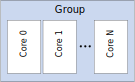
- Socket. A list of cores grouped by socket.
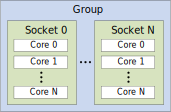
- NUMA Node. A list of cores group by NUMA node.
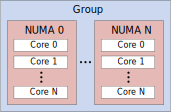
Core
Each core has the following information:
| 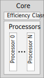 |
-
Efficiency Class. Defines the efficiency class of a Core. On a heterogeneous system, this is the relative performance of each Core, where higher efficiency class values have more performance.
-
Processor IDs. Each processors ID/affinity.
|
ID system
GTS employs a grouped ID system implemented with OwnedId to identify resouces and their subresources. An OwnedId consists of a UID that is split into two sub IDs an Owner ID and a Local ID.
| 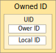 |
-
Owner ID. The resource ID. A globally unique ID [0, UINT16_MAX). These IDs are generated in strictly increasing order {0, 1, ..., UINT16_MAX-1}
-
Local ID. The sub-resource ID. A locally unique ID [0, UINT16_MAX) relative to the resource. These IDs are generated in strictly increasing order {0, 1, ..., UINT16_MAX-1}.
-
UID. A globally unique ID.
|
- Warning
- IDs will wrap if more than UINT16_MAX are generated.
Worker Pool
A Worker Pool is the fundumental executor of CPU work. It determines how SW Worker threads are mapped to a Group’s Processors.
Terminology
- Worker: A wrapper around a SW thread generated by the Worker Pool.
- Worker ID: A OwnedId of a Worker, where the Owner ID is the ID of the Worker Pool and the Local ID is the ID of the Worker.
- Master: The Worker associated with the calling thread that creates the Worker Pool. The Worker Pool does not own this thread. It always has a local ID of 0.
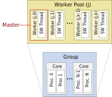
- Note
- GTS has no limit on the number of created Worker Pools, which enables the developer to divide up the compute resources to meet their needs.
Initialization
A Worker Pool can be initialized three ways: default, by explicit thread count, and by description structure.
Default
By default, a Worker Pool is initialized to contain the same number of SW threads as the system has HW thread.
Explicit Thread Count
The Worker Pool's SW thread count can also be initialized explicitly. The value can be more or less than the number of HW threads.
Description Structure
The Worker Pool can further be initialized explicitly with a description structure, providing control over each SW thread. The description structure specifies:
- Visitor The caller can provide a WorkerPoolVisitor to hook various points in the WorkerPools lifetime.
- Thread Local Storage Redirection The caller can provide getters and setters to their own TLS, useful for defining TLS in a different address space like cross DLL boundaries.
- Task Caching Workers will cache Tasks below a specified threshold. The caller can set this threshold via gts::WorkerPoolDesc.cachableTaskSize. All Tasks below this size will have their size clamped to it. The caller can also precache Tasks during initialization via gts::WorkerPoolDesc.initialTaskCountPerWorker.
- Note
- The index of each gts::WorkerThreadDesc pushed into gts::WorkerPoolDesc::workerDescs becomes the Local ID of the Worker. This means the first element is always the Master Thread's description.
-
Since the Worker Pool does not own the Master Thread, its description has no effect on the thread. It is merely a placeholder to keep the index mapping 1-1 with Local IDs.
struct MyVisitor : public WorkerPoolVisitor
{
virtual void onThreadStart(OwnedId workerId) final { printf("Worker %d started", workerId.localId()); }
virtual void onThreadExit(OwnedId workerId) final { printf("Worker %d exited", workerId.localId()); }
};
MyVisitor myVisitor;
sprintf(workerPoolDesc.
name,
"TheWorkerPool");
const uint32_t threadCount = gts::getHardwareThreadCount();
for (size_t iThread = 0; iThread < threadCount; ++iThread)
{
sprintf(workerDesc.
name,
"Worker %d", iThread);
}
Micro-scheduler
A Micro-scheduler defines the schuduling policy of work onto a Worker Pool. It is the fundamental scheduler of work onto the CPU. It creates and consumes Tasks as a fundamental unit of work. A Micro-scheduler is always mapped to a Worker Pool with a 1:1 mapping between Local Schedulers and Workers.
Terminology
- Local Scheduler: A per Worker scheduling element that schedules work onto a Worker and coordinates with other Local Schedulers.
- Local Scheduler ID: An OwnedId of a Local Scheduler, where the Owner ID is the ID of the Micro-scheduler and the Local ID is the ID of the Local Scheduler.
- Master: The Local Scheduler associated with the calling thread that creates the Micro-scheduler. The Master will not schedule work unless the developer calls a wait function on the Micro-scheduler, however other Local Schedulers can take work from it. It always has a local ID of 0. Further, GTS does not require that a Micro-scheduler and Worker Pool share the same Master thread.
- Task: A task is the unit of work that the Micro-scheduler consumes. Tasks are dynamically managed by the Micro-scheduler and enable fork-join parallelism. It is important to note that Tasks are not persistent. Tasks are generally destroyed once they are executed. See (dev_guide_micro_fork_join) for details on using Tasks. (For persistent work items, use the Macro-scheduler's Nodes.)
- Isolation: GTS has no limits on the number of Micro-schedulers that can be attached to a Worker Pool. All Micro-schedulers are executed in round-robin order, and each Micro-scheduler is a separate execution arena, meaning its Tasks are isolated from other Micro-scheduler's Tasks.
- External Victim: Micro-schedulers can reference other Micro-schedulers as External Victims. Tasks are taken from External Victims when all Local Schedulers are exhausted of Tasks. This
| 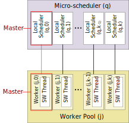 | 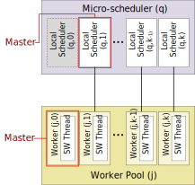 |
| Fig 1. Same Master as its Worker Pool. | Fig 2. Different Master thread than its Worker Pool. Local Scheduler 0 will not be utilized. |
| 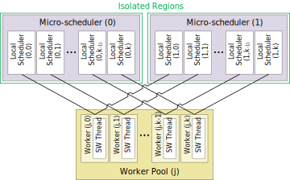 | 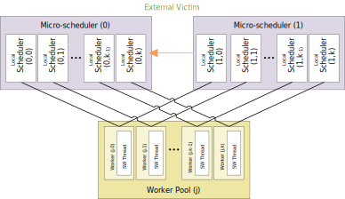 |
| Fig 3. Isolation of Mutliple Schedulers | Fig 4. External Victim |
- Warning
- Shutting down a Worker Pool will implicity destroy all attached Micro-schedulers.
Initialization
A Micro-scheduler can be initialized two ways: with just a Worker Pool, or with a description structure.
Basic
Description Structure
The Micro-scheduler can further be initialized explicity with a description structure, specifying Task priorities and debugging info.
- Task Priority: Task priority imparts an ordering on Task execution within a Local Scheduler. Priorities are indexed [0, priorityCount), with zero being the highest priority. Task priorities are not preemptive, that is if a Task is spawned with higher priority than the currently executing, it will have to wait until the currently executing task finishes. To prevent starvation, a boost age is used to temporarily boost lower priority Tasks.
MicroSchedulerDesc schedulerDesc;
schedulerDesc.pWorkerPool = &workerPool;
schedulerDesc.priorityCount = 1;
schedulerDesc.priorityBoostAge = 1000;
sprintf(schedulerDesc.name, "TheMicroScheduler");
Examples
1-1 Affinity
This example shows how to create a Worker Pool with a 1-1 SW thread to HW thread relationship.
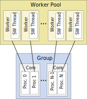
Example Code
Preemptive Task Priority
This example shows how to use two Worker Pools and Micro-schedulers to create preemptive priorities among Tasks. The GTS Micro-schedule implements Task priorities, yet it does not context switch when a higher priority task is spawned. To achieve context switching behavior, one needs to use the OS's preemptive scheduler.
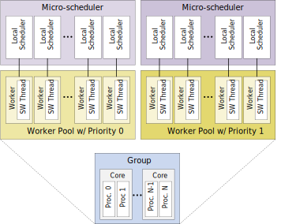
Example Code
Task Isolation
This example shows how to use two Mirco-scheduler to create two regions of Task isolation.
Example Code
Partitioning
This example demonstrates processor partitioning using the following hypothetical:
Imagine a scenario where there are long-running, multi-frame Tasks that need to run alongside a normal update loop. If the long-running Tasks are mixed with the update-loop, the update-loop Tasks could starve. To handle this quality-of-service issue, processors can be partitioned into two WorkerPools, one to handle the update-loop Tasks and one to handle the long-running Tasks. The goal of this configuration is to keep Tasks isolated. The only time it may be ok to break this isolation is when the long-running Micro-scheduler is out of Tasks, where it can victimize the update-loop Tasks.
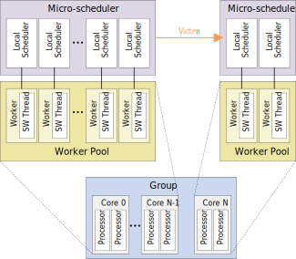
Example Code
- Note
- One could also solve this problem similar to the (Preemptive Task Priority) example with the update loop running higher priority; however, issues could arise with cache thrashing when the tasks are context switched.
NUMA Hierarchy
This example demonstrates hierarchical Task scheduling over two NUMA nodes. Each node gets it's own Worker Pool and Micro-scheduler. The goal of this configuration is to keep Tasks local to each NUMA node as long as possible. Only when they run out of Tasks do they communicate with each other through victimization.
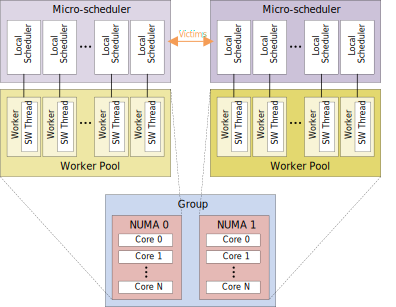
Example Code
Heterogenous Hierarchy
This example demonstrates hierarchical Task scheduling over two Efficiency Classes. Each Efficiency class gets it's own Worker Pool and Micro-scheduler. The goal of this configuration is to keep Tasks local to their Efficiency Class as long as possible. The only non-local communication that happens is when the more efficient Micro-scheduler victimizes the less efficient Micro-scheduler. Victimization is one-way, because we don't want a more computationally intensive Task to run on a less efficient processor, which could dramatically increase the overall makespan of the schedule.
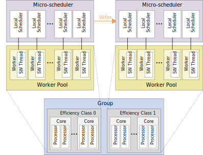
Example Code
 1.8.18
1.8.18